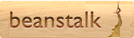

Oops! We are unable to run Beanstalk as your browser does not support it. To experience hardware accelerated graphics, please install the latest version of Internet Explorer or any modern web browser.
Install!
Introducing Beanstalk, an application designed to explain the benefits of savings to children.